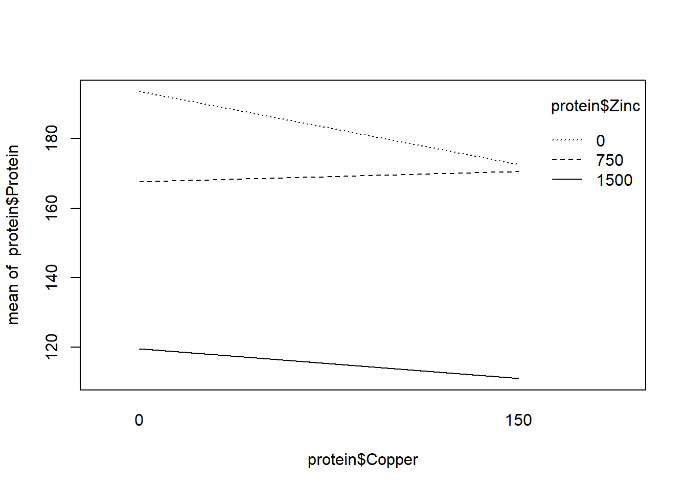
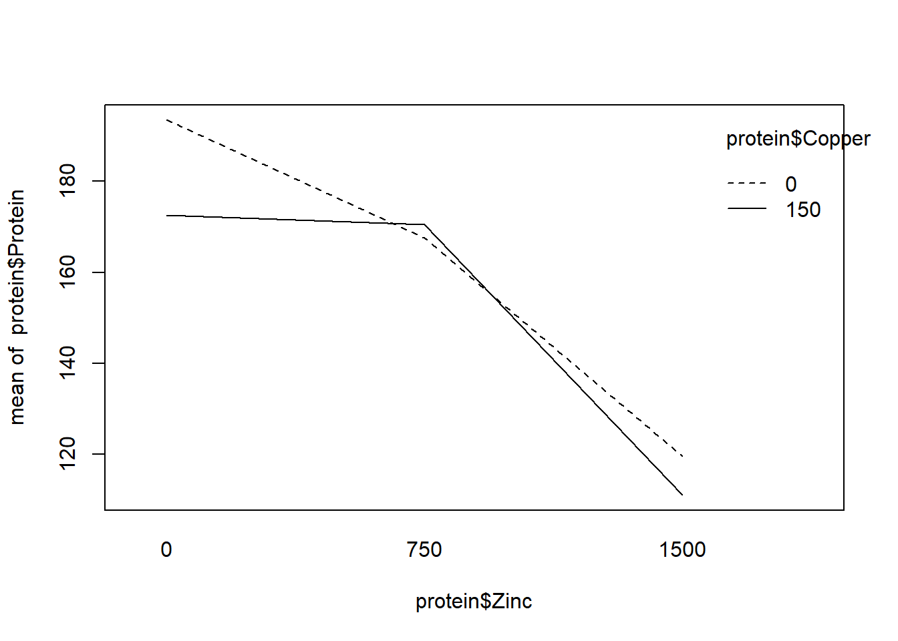

Chapter 9 Two-Way ANOVA
Two-way ANOVA models represent experiments with two categorical treatment variables and aim to quantify uncertainty about differences in mean response over the levels of these treatments. Superficially, these models appear similar to RCBDs, but neither categorical variable is a block, rather, the effects of both on the response are of interest. We could simply cross the levels of the two treatments and perform a one-way ANOVA, but that will make it challenging to sort out which treatment variable drives the differences in mean response. If we were to apply Tukey tests afterwards, we would have difficulties interpreting comparisons of different levels of different treatment variables. The main advantage of the two-way setup is the presence of explicit ``interaction” effects for the crossed treatments. If these are insignificant in their effects on the mean response, then the model is simply additive, i.e., the effects of the two treatments are separable and therefore easily interpretable.
9.1 The Model
Let \(i = 1, \ldots, a\) denote the number of levels of treatment variable A, \(j = 1, \ldots, b\) denote the same for treatment variable B, and let \(k = 1, \ldots, n\) denote the number of replications at each pair of crossed levels. We consider only balanced designs (for now). Then, the effects model may be written \[Y_{ijk} = \mu + \alpha_i + \beta_j + (\alpha\beta)_{ij} + \epsilon_{ijk}\] where \(\alpha_i\) and \(\beta_j\) are the “main effects” parameters for the treatment variables A and B and the \((\alpha\beta)_{ij}\) parameters are “interaction” effects representing synergistic effects between the two treatment variables—in other words, allowing for the treatment effects to be non-additive. As written, the model contains too many parameters—there are 1 + a + b + ab for a total of ab crossed treatment mean responses. So, we need 1+a+b constraints. One choice is the baseline constraints in which we set \(\alpha_a = \beta_b = (\alpha\beta)_{i,b} = (\alpha\beta)_{a,j} = 0\). This zeroes out \(1+1+a+b-1\) parameters. (Note, there is a redundancy because \(((\alpha\beta)_{a,b})\) appears twice in the constraint set, hence the minus 1.) It is also possible to specify sum-to-zero constraints.
9.1.1 Example: protein chemistry
An experiment is done in which minnows are fed diets with different amounts of zinc and copper supplements. The experimenters record the protein content of the minnows once harvested. Let the levels of copper be 0 and 100 and for zinc be 0, 100 and 200. Then, there are 6 treatment mean responses. Using the baseline constraint, we have the parameters \(\mu, \alpha_1, \beta_1, \beta_2, (\alpha\beta)_{11}, (\alpha\beta)_{12}\).
9.2 Tests for interaction and main effects
The most important questions to be answered are: “do the treatments effect the mean response?” and “are those effects separable/additive?” We may answer these questions using tests of interaction and main effects.
The test for interaction has null hypothesis \(H_0: (\alpha\beta)_{ij} = 0, \, \forall i,j\), versus the alternative that at least one interaction term is non-zero. If we fail to reject the null hypothesis, it means the effects of the treatments (if there are any) are separable/additive, i.e., the model is \(Y_{ijk} = \mu + \alpha_i + \beta_j + \epsilon_{ijk}\). This means we can interpret the treatment effects separately.
If we fail to reject the null hypothesis of the interaction test then we may move on to testing main effects: \(H_0:\alpha_i = 0, \,\forall i\) and \(H_0:\beta_j = 0, \, \forall j\) versus the alternatives that at least one main effect is non-zero. There is no point in doing these tests if there are interaction effects—in that case the treatments must have an effect on the mean response.
The sums of squares for testing interaction and main effects are given by the following:
\[\begin{align*}
SS_A &= \sum_{i=1}^a \sum_{j = 1}^b \sum_{k=1}^n (\bar Y_{i\cdot\cdot} - \bar Y_{\cdot\cdot\cdot})^2\\
SS_B &= \sum_{i=1}^a \sum_{j = 1}^b \sum_{k=1}^n (\bar Y_{\cdot j\cdot} - \bar Y_{\cdot\cdot\cdot})^2\\
SS_{Int} &= \sum_{i=1}^a \sum_{j = 1}^b \sum_{k=1}^n (\bar Y_{ij\cdot} - \bar Y_{i\cdot\cdot} - \bar Y_{\cdot j\cdot} +\bar Y_{\cdot\cdot\cdot})^2\\
SST & = \sum_{i=1}^a \sum_{j = 1}^b \sum_{k=1}^n ( Y_{ijk} -\bar Y_{\cdot\cdot\cdot})^2
SSE & = SST - SS_A - SS_B - SS_{Int}
\end{align*}\]
The degrees of freedom associated with \(SS_A\) is \(a-1\), for \(SS_B\) it is \(b-1\), for \(SS_{Int}\) it is \((a-1)(b-1)\) and for \(SSE\) we find it by subtraction \((abn-1) - (a-1) - (b-1) - (a-1)(b-1)\). Then, the F test for interaction has test statistic \[F_{Int} = \frac{SS_{Int} / (a-1)(b-1)}{SSE / df_{SSE}}\stackrel{H_0}{\sim} F_{(a-1)(b-1), df_{SSE}}.\] Similarly, for testing the main effect A \[F_A = \frac{SS_{A} / (a-1)}{SSE / df_{SSE}}\stackrel{H_0}{\sim} F_{a-1, df_{SSE}}.\]
9.2.1 Example: Protein and dietary metals
Experimenters raised minnows in 36 water tanks under different dietary regimes. The experimenters varied the levels of zinc and copper in the minnow’s diets and recorded the average protein content of the minnows at harvest.
Download protein.txtWe can code the design matrix for a two way model under sum-two-zero constraints by hand and compute the estimated effects:
protein.df<- read.table('protein.txt')
colnames(protein.df) = c('Copper', 'Zinc', 'Protein')
Y <- c(201, 186, 173, 162, 115, 124, 163, 182, 184, 157, 114, 108)
X <- cbind(c(1,1,1,1,1,1,1,1,1,1,1,1),
c(1,1,1,1,1,1,-1,-1,-1,-1,-1,-1),
c(1,1,0,0,-1,-1,1,1,0,0,-1,-1),
c(0,0,1,1,-1,-1,0,0,1,1,-1,-1),
c(1,1,0,0,-1,-1,-1,-1,0,0,1,1),
c(0,0,1,1,-1,-1,0,0,-1,-1,1,1))
X## [,1] [,2] [,3] [,4] [,5] [,6]
## [1,] 1 1 1 0 1 0
## [2,] 1 1 1 0 1 0
## [3,] 1 1 0 1 0 1
## [4,] 1 1 0 1 0 1
## [5,] 1 1 -1 -1 -1 -1
## [6,] 1 1 -1 -1 -1 -1
## [7,] 1 -1 1 0 -1 0
## [8,] 1 -1 1 0 -1 0
## [9,] 1 -1 0 1 0 -1
## [10,] 1 -1 0 1 0 -1
## [11,] 1 -1 -1 -1 1 1
## [12,] 1 -1 -1 -1 1 1beta.hat <- solve(t(X)%*%X)%*%t(X)%*%Y
beta.hat## [,1]
## [1,] 155.750000
## [2,] 4.416667
## [3,] 27.250000
## [4,] 13.250000
## [5,] 6.083333
## [6,] -5.916667 solve(t(X)%*%X)%*%t(X)## [,1] [,2] [,3] [,4] [,5] [,6]
## [1,] 0.08333333 0.08333333 0.08333333 0.08333333 0.08333333 0.08333333
## [2,] 0.08333333 0.08333333 0.08333333 0.08333333 0.08333333 0.08333333
## [3,] 0.16666667 0.16666667 -0.08333333 -0.08333333 -0.08333333 -0.08333333
## [4,] -0.08333333 -0.08333333 0.16666667 0.16666667 -0.08333333 -0.08333333
## [5,] 0.16666667 0.16666667 -0.08333333 -0.08333333 -0.08333333 -0.08333333
## [6,] -0.08333333 -0.08333333 0.16666667 0.16666667 -0.08333333 -0.08333333
## [,7] [,8] [,9] [,10] [,11] [,12]
## [1,] 0.08333333 0.08333333 0.08333333 0.08333333 0.08333333 0.08333333
## [2,] -0.08333333 -0.08333333 -0.08333333 -0.08333333 -0.08333333 -0.08333333
## [3,] 0.16666667 0.16666667 -0.08333333 -0.08333333 -0.08333333 -0.08333333
## [4,] -0.08333333 -0.08333333 0.16666667 0.16666667 -0.08333333 -0.08333333
## [5,] -0.16666667 -0.16666667 0.08333333 0.08333333 0.08333333 0.08333333
## [6,] 0.08333333 0.08333333 -0.16666667 -0.16666667 0.08333333 0.08333333Note the the estimates are response contrasts. for example, \[ \hat\alpha_1 = (1/6, 1/6, 1/6, 1/6, 1/6, 1/6, -1/6, -1/6, -1/6, -1/6, -1/6, -1/6)^\top Y = \bar Y_{1\cdot} - \bar Y_{2\cdot} \]
Under the sum-to-zero constraints the effects estimates are the following linear combinations of marginal response means:
mean(Y)## [1] 155.75mean(Y[1:6]) - mean(Y) ## [1] 4.416667mean(Y[c(1,2,7,8)]) - mean(Y)## [1] 27.25mean(Y[c(3,4,9,10)]) - mean(Y)## [1] 13.25mean(Y[c(1,2)]) - mean(Y[c(1,2,7,8)]) - mean(Y[1:6]) + mean(Y)## [1] 6.083333mean(Y[c(3,4)]) - mean(Y[c(3,4,9,10)]) - mean(Y[1:6]) + mean(Y)## [1] -5.916667Alternatively, we can compute the effects estimates in R using the options/contrasts statement to use sum-to-zero constraints:
protein = protein.df
colnames(protein) <- c("Copper", "Zinc", "Protein")
protein$Copper <- as.factor(protein$Copper)
protein$Zinc <- as.factor(protein$Zinc)
options(contrasts = c("contr.sum", "contr.sum"))
my.aov <- aov(Protein~Copper + Zinc + Copper*Zinc, data = protein)
summary(my.aov)## Df Sum Sq Mean Sq F value Pr(>F)
## Copper 1 234 234 1.809 0.227264
## Zinc 2 10234 5117 39.537 0.000351 ***
## Copper:Zinc 2 288 144 1.113 0.387957
## Residuals 6 777 129
## ---
## Signif. codes: 0 '***' 0.001 '**' 0.01 '*' 0.05 '.' 0.1 ' ' 1my.aov$coefficients## (Intercept) Copper1 Zinc1 Zinc2 Copper1:Zinc1
## 155.750000 4.416667 27.250000 13.250000 6.083333
## Copper1:Zinc2
## -5.916667We can verify the t-tests in the lm output using our formulas for testing contrasts:
c1<-c(1/6, 1/6, -1/12, -1/12, -1/12, -1/12, 1/6,1/6,-1/12, -1/12, -1/12, -1/12)
sum(c1^2)## [1] 0.1666667129/6## [1] 21.5sum(c1*protein$Protein)## [1] 27.2527.25/sqrt(21.5)## [1] 5.8768862*(1-pt(5.876886, 6))## [1] 0.001075079summary(lm(Protein~Copper + Zinc + Copper*Zinc, data = protein))##
## Call:
## lm(formula = Protein ~ Copper + Zinc + Copper * Zinc, data = protein)
##
## Residuals:
## Min 1Q Median 3Q Max
## -13.5 -6.0 0.0 6.0 13.5
##
## Coefficients:
## Estimate Std. Error t value Pr(>|t|)
## (Intercept) 155.750 3.284 47.427 5.89e-09 ***
## Copper1 4.417 3.284 1.345 0.22726
## Zinc1 27.250 4.644 5.867 0.00108 **
## Zinc2 13.250 4.644 2.853 0.02907 *
## Copper1:Zinc1 6.083 4.644 1.310 0.23816
## Copper1:Zinc2 -5.917 4.644 -1.274 0.24980
## ---
## Signif. codes: 0 '***' 0.001 '**' 0.01 '*' 0.05 '.' 0.1 ' ' 1
##
## Residual standard error: 11.38 on 6 degrees of freedom
## Multiple R-squared: 0.9327, Adjusted R-squared: 0.8766
## F-statistic: 16.62 on 5 and 6 DF, p-value: 0.001854R includes the “interaction.plot” function to graphically investigate interactions. The fact the lines only slightly cross in one plot supports no interaction. We also see the F test for interaction is not significant.
interaction.plot(protein$Copper, protein$Zinc, protein$Protein)
interaction.plot(protein$Zinc, protein$Copper, protein$Protein)